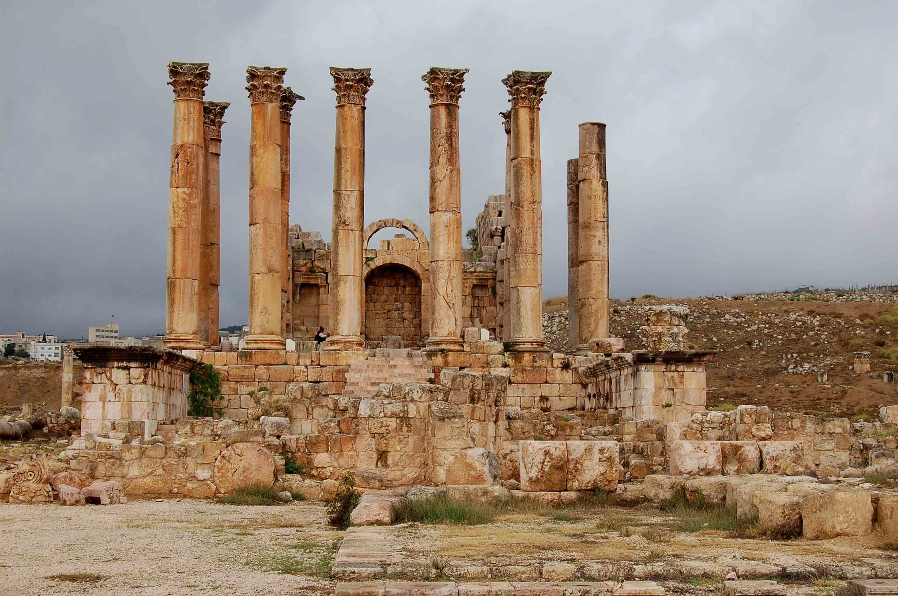

Artemis: EXAFS Data Analysis using Feff with Larch or Ifeffit¶
I sing of Artemis, whose shafts are of gold, who cheers on the hounds, the pure maiden, shooter
of stags, who delights in archery, own sister to Apollo with the golden sword. Over the shadowy
hills and windy peaks she draws her golden bow, rejoicing in the chase, and sends out grievous
shafts. The tops of the high mountains tremble and the tangled wood echoes awesomely with the
outcry of beasts: earthquakes and the sea also where fishes shoal. But the goddess with a bold
heart turns every way destroying the race of wild beasts: and when she is satisfied and has
cheered her heart, this huntress who delights in arrows slackens her supple bow and goes to the
great house of her dear brother Phoebus Apollo, to the rich land of Delphi, there to order the
lovely dance of the Muses and Graces.
Homeric Hymns XXVII
Translated by H. G. Evelyn-White

{kind=link}
ARTEMIS is the goddess of the hunt, which is an apt metaphor for the chore of data analysis. The name also suggests a fallacious pun which works in English and in the Romance languages and which suggests that EXAFS data analysis is more an art than a science.
Contents
- 1. Forward
- 2. Starting Artemis
- 3. The Data window
- 4. The Atoms and Feff Window
- 5. The Path page
- 6. The GDS window
- 7. Running a fit
- 8. Plotting data
- 9. The Log and Journal windows
- 10. The History window
- 11. Monitoring things
- 12. Managing preferences
- 13. Worked examples
- 14. Crystallography for EXAFS
- 15. Extended discussions
- 15.1. Quick first shell
- 15.2. Characteristic value
- 15.3. Geometric parametrization of bond length
- 15.4. Modeling disorder
- 15.5. Constraints and restraints
- 15.6. Bond valence sums
- 15.7. Empirical standards
- 15.8. Unique potential styles
- 15.9. Fuzzy degeneracy
- 15.10. Handling dopants
- 15.11. 5 & 6 legged paths
DEMETER is copyright © 2009-2016 Bruce Ravel – This document is copyright © 2016 Bruce Ravel
This document is licensed under The Creative Commons Attribution-ShareAlike License.
If DEMETER and this document are useful to you, please consider supporting The Creative Commons.